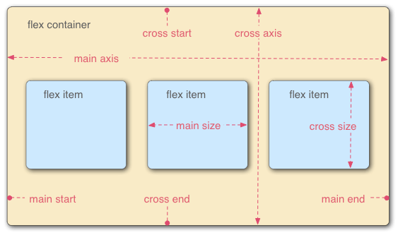

采用Flex布局的元素，称为Flex容器（flex container），简称”容器”。它的所有子元素自动成为容器成员，称为Flex项目（flex item），简称”项目”。

容器默认存在两根轴：水平的主轴（main axis）和垂直的交叉轴（cross axis）。主轴的开始位置（与边框的交叉点）叫做main start，结束位置叫做main end；交叉轴的开始位置叫做cross start，结束位置叫做cross end。 项目默认沿主轴排列。单个项目占据的主轴空间叫做main size，占据的交叉轴空间叫做cross size。
flex-direction属性决定主轴的方向, 即布局的方向 flex-direction: row(默认) | row-reverse | column | column-reverse;
横向布局时 宽度: 没有则随子元素填充, 没有子元素则为0 高度: 当未设置高度时, 高度随父元素填充(align-items: stretch;(默认)), 父元素没有高度则为0
按照百分比很容易做到 33.3% 33.3% 33.3%
如果宽度百分比超过100%, 元素就会按照比例来压缩, 所以三等分也可以设置成 100% 100% 100%
在没有flex布局的时候很麻烦, 使用flex布局就非常简单了justify-content: center; align-items: center;
justify-content属性定义了项目在主轴上的对齐方式。 justify-content: flex-start(默认) | flex-end | center | space-between | space-around;

align-items属性定义项目在交叉轴(纵轴)如何对齐. align-items: flex-start | flex-end | center | baseline | stretch(默认);

纵向布局时 宽度: 当未设置宽度时, 宽度随父元素填充(align-items: stretch;(默认)), 父元素没有宽度则为0 高度: 没有则随子元素填充, 没有子元素则为0
注: 只有当父视图有高度的时候才可以使用百分比
我们可以看到纵向布局的justify-content和align-items互换了, 与横向布局不同的是justify-content控制上下, align-items控制左右
纵向布局 align-items ...